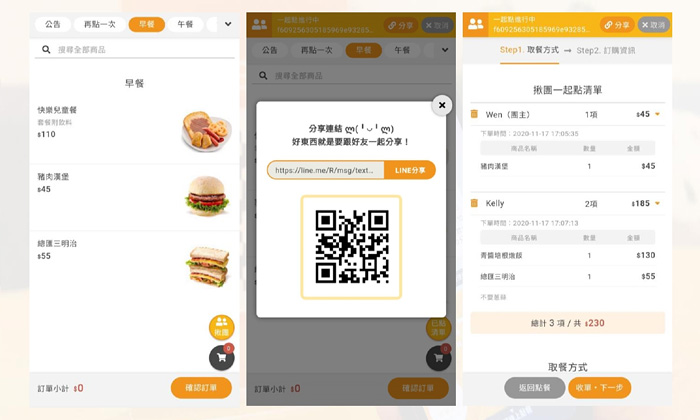
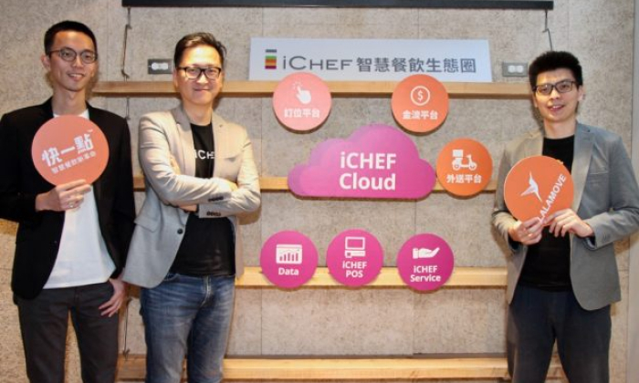
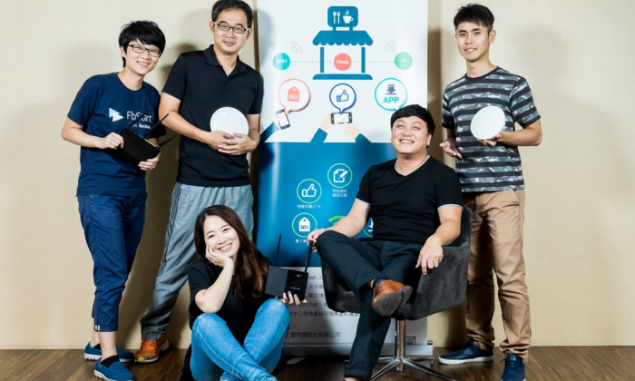

首頁
關於我們
產品服務
客戶案例
新聞中心
人才招募
聯絡我們
NEWS
新聞中心
2021-01-27
不用再排隊點餐！點點全球協助餐飲數位轉型，用Line就可以點餐...
2021-01-26
疫情間客戶數10倍速成長！用LINE點餐的「快一點」，如何成早餐店阿姨的好幫手？
2020-12-30
LINE官方帳號新外掛模組上架 餐飲業熱門首選「快一點」線上點餐...
2020-12-21
導入線上點餐系統！提升消費次數 學餐回購率近九成...
2020-11-20
智慧商業新時代》愛碼市、awoo阿物並列數位行銷組冠軍，點點全球贏得創新體驗桂冠...
2020-11-19
WCIT 2020全新3D台灣形象館 展台灣四大產業解方...
2020-11-19
2020 Meet Taipei亞洲最大創新創業嘉年華令人驚艷...

2020-11-18
夯團媽 「快一點」線上點餐「揪團」正熱！
2020-11-04
經濟部助中小型店家數位轉型...
2020-04-08
坐擁2100萬用戶！LINE開放「點餐外帶」功能，助餐飲慘業抗疫...

2019-11-28
用LINE點餐、外送到家！iCHEF串連快一點、Lalamove助店家拓展外送外帶...
2019-11-14
【2019 Meet Taipei】商務多元呈現 新零售什麼都賣、企業服務更加分眾創新...

2019-02-26
愛物聯智慧WiFi上網、數據、行銷一次搞定...
2016-09-26
以Wi-Fi創造零售無限商機...
2015-07-08
[Meet創業之星] 愛物聯把商用wifi變成O2O行銷利器...